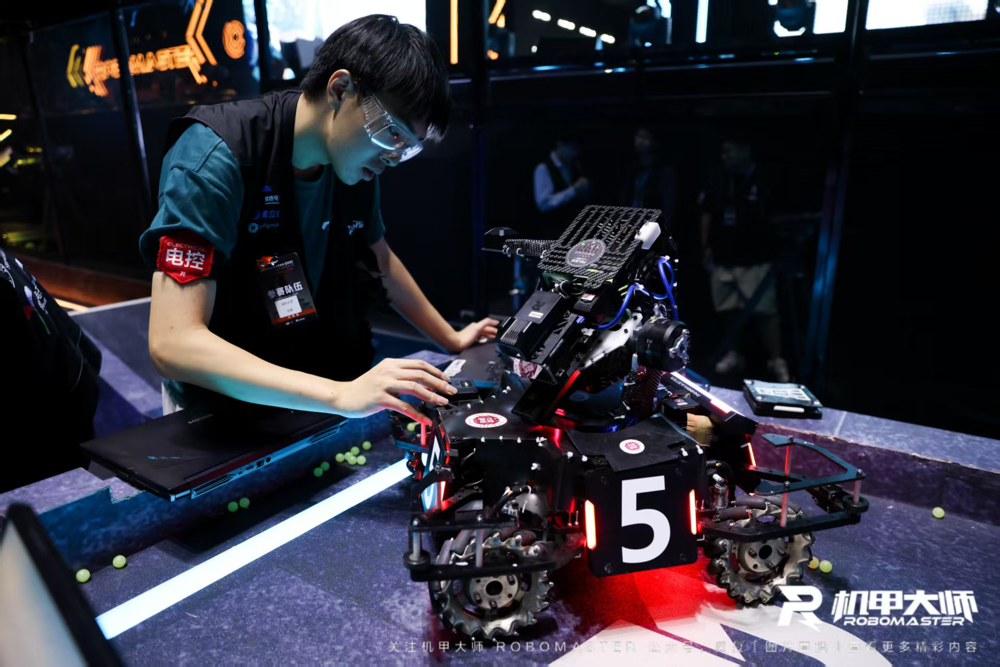
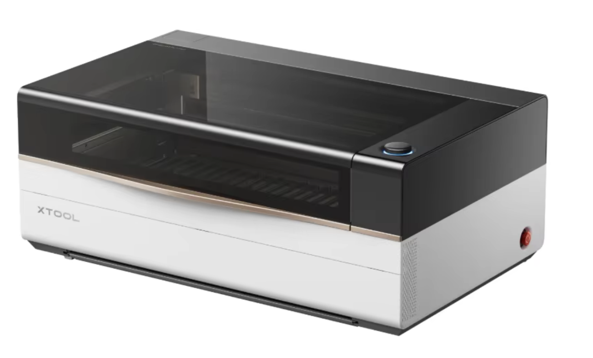
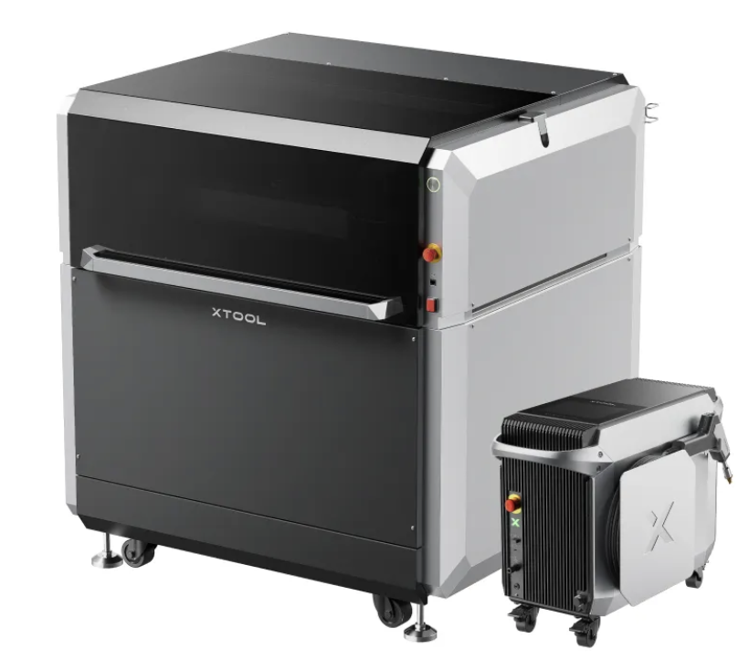
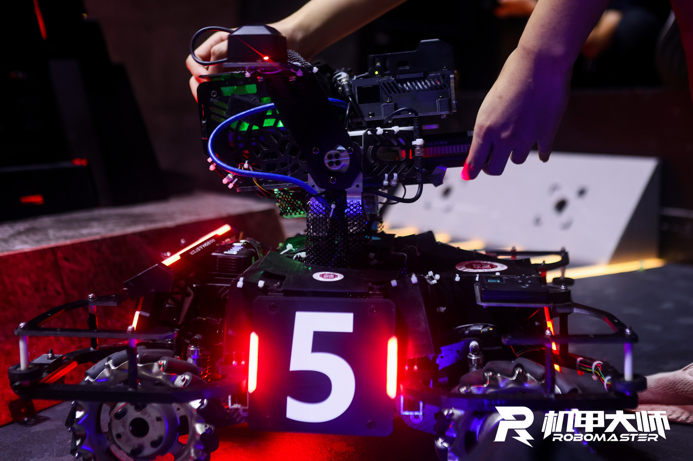
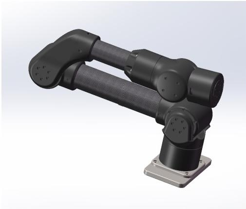

QS 排名第 8，GPA 4.1/5.0，Excellent Student Leader。
Hardware Product Manager · Project Management
张硕｜硬件产品与项目管理作品集
新加坡国立大学电子工程硕士在读，求职方向为产品项目管理。 我关注从用户需求、产品定义、技术方案到工程交付的完整链路， 作品集重点展示激光硬件产品、RoboMaster 机器人与 6 轴机械臂系统的产品思考和项目推进能力。

负责未上市激光新产品软硬件全链路体验测试与预立项分析。
战队副队长，负责赛季规划、跨组推进、招商与核心模块落地。
PRD、VOC、竞品分析、项目计划、风险管理与阶段复盘。
Experience
实习经历
独立呈现产品经理相关经历，重点展示硬件产品体验测试、预立项分析和竞品数据系统建设。
2026.05 - 至今
xTool｜激光产品线 硬件产品经理
在激光产品线参与未上市新品体验测试、融合产品预立项与竞品数据系统建设， 三项工作并行支撑产品定义、研发优化和市场判断。


- 负责未上市激光新产品软硬件全链路体验测试，覆盖设备安装、软件连接、加工流程和异常处理，输出结构、交互、软件体验问题清单，并推动优化需求进入研发排期。
- 参与 P 系列与 MetalFab 系列融合产品预立项，完成 VOC、核心用户访谈与竞品拆解；进一步完成技术可行性评估、成本测算、转化率与销量预估，撰写预立项文档并通过内部评审。
- 基于 Vibe Coding 搭建竞品数据自动化采集 Web 系统，提升调研整理和用户评价分析效率。
2025.05 - 2025.08
大疆创新 RoboMaster｜场地道具执行
参与 RoboMaster 赛事相关执行工作，理解大型机器人赛事的现场交付、 道具系统稳定性和跨团队协作要求。
Education
教育背景
2025.08 - 2027.02
新加坡国立大学｜电子工程硕士
GPA 4.1/5.0，获 Excellent Student Leader。
2021.09 - 2025.07
深圳大学｜电子信息工程本科
GPA 3.75/4.5，CET-6 513。获荔园之星奖学金、优秀毕业生、 优秀学生干部、双创之星等荣誉。
Core Work
核心项目
先按简历中的真实经历搭建项目叙事。之后你发来的图片、视频、PRD、 计划表和复盘内容，会继续补充到对应项目中。
硬件产品 / 技术成果
RoboMaster 超级对抗赛

作为战队副队长、招商经理、步兵电控/能量机关负责人，负责赛季机器人产品规划、 需求定义、跨组推进和核心模块交付。
- 基于比赛规则、历史方案、竞品战队设计与团队资源，梳理步兵/英雄机器人、能量机关等核心功能需求。
- 组织结构、硬件、电控、视觉等小组完成需求拆解、技术评审、物料选型与风险评估。
- 建立赛季 WBS 与里程碑计划，跟踪研发进度，维护风险与问题清单，推动测试后的版本迭代与闭环。
20W+ 资金及物资资源
全国八强 连续两年全国一等奖
开源三等奖 能量机关方案被沿用
全栈产品 / 系统集成
6 轴机械臂系统

完成机械臂结构设计、3D 打印、电机选型与整机装配，搭建从机械结构、 控制硬件到嵌入式软件的完整原型系统。
- 设计 ROS2 + STM32 上下位机架构，明确轨迹规划、动作执行与状态反馈边界。
- 上位机基于 Gazebo / MoveIt 实现运动学解算与轨迹规划，下位机负责电机控制。
- 探索重力补偿与阻抗控制等力控策略，提升运动稳定性与交互安全性。
ROS2 Gazebo / MoveIt
STM32 控制与反馈
全栈 结构到软件原型
机械臂 PRD 待补充
系统架构材料待补充
RoboMaster PM Workflow
从需求立项到赛季复盘
需求立项
参考赛事规则、我方与对手历史设计、技术开源方案，提出机器人核心需求： 做到“人有我有、人有我优”，同时识别“人有我无”的劣势。
- 结合研发经费提出成本需求，明确功能优先级与资源边界。
- 评审关键技术点，判断做与不做，降低赛季重大决策风险。
预研阶段
围绕关键技术点开展风险评估、技术可行性分析和物料选型， 组织结构、硬件、软件、电控等方向输出预研结论。
- 提出结构、硬件与软件 PRD，统一跨组开发目标。
- 提前暴露技术难点，为后续方案评审和排期提供依据。
计划阶段
组织各组拆解需求并进行技术方案讨论，完成方案评审与锁定， 制定项目管理计划，进行周期管理和项目风险评估。
- 分配团队资源，组建各兵种研发小组。
- 确定赛季预算，制定招商与校内资金筹集计划。
样机与正式阶段
通过样机开发与测试暴露设计问题、需求遗漏和可行性问题， 进行需求变更并控制项目风险；正式阶段以实战训练检验功能完整性与可操控性。
- 确保机器人符合检录和上场条件，每场赛后组织复盘总结。
- 赛后沉淀问题、错误决策和技术文档，保证战队持续传承。
Role
我的角色与贡献
把技术成果转成产品叙事
通过 PRD、VOC、用户访谈和竞品分析，把工程项目里的功能、约束、成本和商业价值讲清楚。
推动复杂硬件项目落地
建立 WBS、里程碑、风险与问题清单，协调结构、硬件、电控、视觉、软件等角色推进样机和交付。
连接软硬件全栈链路
具备 C/C++、STM32、ESP32、四层 PCB、SolidWorks、3D 打印、ROS2 等工程背景，能与研发团队高效对齐。
Documents
材料展示框架
这里保留当前项目材料总索引；后续新增文档时，会同步放入对应核心项目卡片。
Strengths
能力关键词
硬件产品定义
PRD 与需求管理
VOC 与用户访谈
竞品分析与预立项
成本测算与 ROI 分析
项目计划与推进
风险管理与阶段复盘
ROS2 / STM32 / SolidWorks
Python / C++ / MATLAB